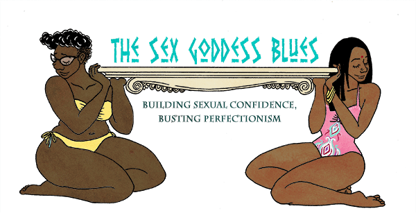
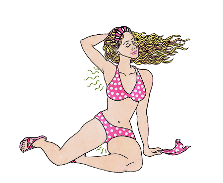
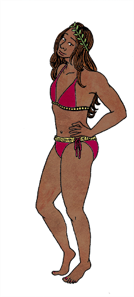
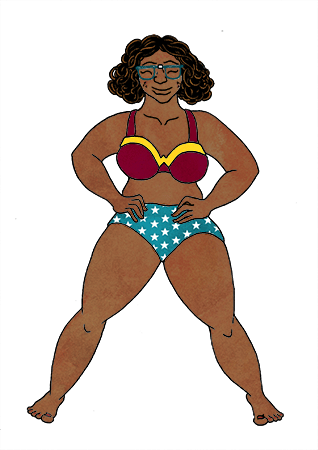
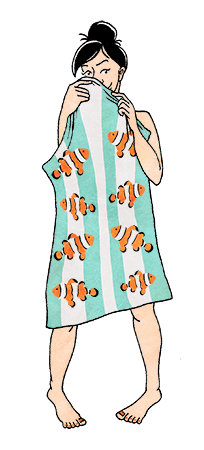
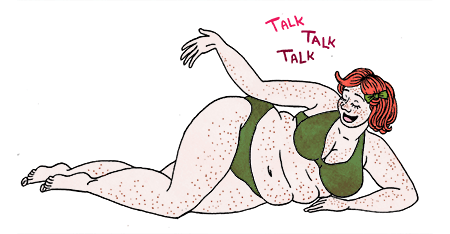

The Sex Goddess Blues: Building Sexual Confidence, Busting Perfectionism
by

I think it's difficult to navigate sexuality as girls and women in the world today. Every dimension of our sexual selves is impacted by our current world and by history, both of which have had an awful lot to say about it, and usually pretty loudly. Shame, all sorts of expectations, beauty standards, media, social roles, and labels loom large in the development of our sexual selves, and can trip us up us a whole lot. We can feel like we have no idea what's happening within our sexual selves; like we don't even know what we want, let alone how to ask for it from a partner. In fact, often enough, women will feel like we know more about a partner's sexuality (especially if that partner is a man) than we do about our own.
Women also hear a lot about self-respect, but generally, women are not taught to think much about self-love, self-respect, and self-care as they pertain to our own sexualities. Many of us struggle with a lot of insecurity, shame and self-doubt, no matter what sexual choices we do or don't make.
Feel like you haven't quite found your footing in the bedroom yet? Join the club. Exploring sex and sexuality is a lifelong process; it's impossible to ever have it all figured out, especially right out of the gate. It's also hard to feel confident about something shiny and new, whatever it is, especially something as complex and loaded as sex. Those who act like they know everything don't. Some people might have more sexual experience under their belt than others, but that doesn't mean they know everything. Nobody does. Sex is different for everyone, and everyone has different preferences. There's no way to be universally "good" at sex, or to know all there is to know about it. There is no strategy or set of skills bound to blow away any partner you'll ever have in your life.
The thing most likely to give your sex life a boost -- and to help you feel boosted in it and your own sexual self -- is confidence: feeling strong and positive about whatever you're doing, however you're doing it, what you may look like while you're doing it, and who you're doing it with.
Demystifying "confidence"
You've probably heard before that confidence is the key to getting what you want in life. Applying for a job? Just be confident! Asking someone out on a date? Confidence is the most attractive trait! Wondering if you can pull off that weird gold skirt you found at the thrift store? You sure can, as long as you wear it with confidence! You go, girl!
Unfortunately, confidence isn't something you just decide to have and then possess without question. It's not like you read an article on confidence or self-acceptance and say, "Wow! I'd never thought about it like that before. I feel great now. Farewell, personal hangups! Look out world! Here comes my most authentic self! I'm amazing, and I don't care what you say!" Would that it were that simple.
For those of us who've struggled with our self-esteem, the concept of confidence is perpetually frustrating. What does it even mean, and how is anyone supposed to get there with so many obstacles in the way?
Gaining confidence in yourself is a lifelong process. It's sometimes a long and winding road with potholes, roadblocks, and even massive collisions. Even the most confident among us have good days and bad. No one feels like a badass 100% of the time. The most realistic option is to get some basic level of confidence to build on. The best place to start is to know that you, as a person, are worthwhile. You're worth fighting for; you deserve good things in your life. You deserve to set goals for yourself. You deserve healthy relationships that make you feel good. You deserve to have your voice heard. You deserve to physically present yourself however you want. You deserve to feel at peace with your body. And, if you're interested in sex, be it by yourself or with partners, you deserve pleasure and joy.
Want to jump to your main area of concern? Prefer to read in smaller chunks? We've got you covered:
- Preparedness: are you ready?
- Sounds, smells, and fluids
- Body hair and grooming
- The pressure to look perfect
- Concerns about sexual prowess
- Overcoming sexual shame
- Communication
...Or you can just scroll on and read the whole thing here!
Hold up: am I even ready for partnered sex?
I'm just going to lay it down: sex with someone else will probably not be great unless you're pretty mentally, emotionally and practically prepared. Before we can feel confident during any kind of experience, we usually have to feel ready for it. Rushing in, or engaging in sex on someone else's timetable, nearly guarantees we won't feel confident. Jumping into a partnered sex life when you're not ready tends to go about as well as jumping out of a plane when you're not ready or prepared.
Confidence in your sexual self is not contingent upon whether or not you're having sex with a partner. Understanding the space you hold as a sexual being, regardless of who you are or are not sleeping with, is crucial. If you're not thinking of heading into the bedroom with anybody anytime soon, that doesn't mean sexual confidence is irrelevant to you. Working on sexual confidence and learning who you are as a sexual being can help you in all kinds of ways. Confidence can make sex better; that much is true. However, confidence in your sexual self is deeper than that. When we get in tune with our desires through fantasy, masturbation, and experimenting sexually on our own, it can strengthen us. We will often benefit from it, no matter what.
In our culture, though, partnered sex is considered a pretty big deal. We hear so many conflicting, confusing messages about it. Many young women face pressures to hurry up and "lose their virginity," especially once high school draws to a close, or if they enter into a "good" relationship with the "right guy." (The "right girl?" or the "right genderqueer person?" Yeah, not so much.) But there's also pressure to hold onto that "purity" or "virginity" until later -- like, at least until you fall in love, maybe until you're with a person you want to marry, or maybe until you're actually married. It can feel like there's a tiny blip of an age range where you're neither "too old" nor "too young" to experience partnered sex for the first time. If you're older or younger than the expected age, you may feel like sex is wrong for you or can't ever be right. We may feel pressure to change our behavior to align with what our culture, community, family, or peer group declares appropriate. Some of us may end up rushing into experiences we're not yet ready for, while others may deny themselves something they truly want and do feel prepared for. And a lot of women feel like they don't get to have their own timetable. We often feel that sex should happen when a partner says they want it; we may feel like this partner won't wait for us, or we may feel bad asking them to if it's not our best time.
So, before anything else, first step back and ask yourself: do I even feel really ready to have partnered sex? How do I even define what sex is for myself? Have I thought this through and asked myself what I want and need, not what culture, parents, peers, or a partner expects of me? For some guidance on figuring out readiness and boundaries, you can check out this and this. Also, here's an article about protecting your heart when it comes to sex.
When it comes to feeling good about your sexual self with partnered sex, the first step is feeling ready for, and really wanting, the sex you're having. We should not do anything we don't feel really excited about and ready for and expect to feel great about it.
Sounds, smells, and fluids: You don't have to be afraid of your own body!
Being that we are, y'know, human, women's bodies are not pristine. No one's body is, whatever their gender. When we have sex, all of our bodies' functions, idiosyncrasies, quirks, and so-called "flaws" are often on display. Real-life sex often involves a lot of body stuff in many different ways: smells, sights, sounds, and goops. Living in fear of these realities, or desperately trying to avoid them during sex, won't do you any good. To some extent, part of being sexual with someone else is sharing all this stuff with them.
Why do I have negative feelings about this stuff in the first place? We've often been brought up to feel embarrassed about women's bodies and some of their functions, from menstruation to vaginal or general body smell to our genital "cleanliness." We're taught that basically all of our sexual functions should be hidden or removed to the best of our ability. We've been conditioned to believe that when we actually have sex, we should be as clean, neat, pretty, and perfect as possible. There's also been a lot of money to be made in making women feel they must buy products to mask menses or vaginal smells. Historically, many companies have capitalized on women's insecurities. They know that so long as women stay self-conscious, they'll continue buying stuff.
Additionally, we live in a porn-saturated world; some of these ideas are heavily reinforced in much mainstream pornography, or even just catalogs for sweatpants that come to our mailboxes. Such media presents an ultra-tidy version of women's sexuality without lumps, bumps, or anything else that's not immaculately streamlined. And when it doesn't, you can get the idea that only "sluts" -- with the implication that that term describes all women in porn -- share or show elements of their bodies that "good" women should never share.
Porn can help some people explore what turns us on, and it can give us ideas for our own sexual experimentation. If you're able to separate such a fantastical version of sex from reality, it's not as much of a problem. The problems arise when we don't separate unrealistic fantasy from real sex with our real-life partners. Many people do not recognize this disparity. This puts tremendous pressure on young, straight women to perform as porn stars do, and to look how they look. When I refer to the way they look, I'm referring to both their bodies and the way their bodily functions are presented.
What if I start my period during sex? What if I want to have sex while I'm on my period, but I feel gross? I'm worried about what my partner might say. Menstruation does not have to kill anyone's sex life. Unfortunately, women are conditioned to be ashamed of their bodies even in the "best" of times, let alone during menstruation. This shame has been engrained in us since before we even started puberty; since it is so pervasive, many women who menstruate end up feeling as though period sex is just off the table. We're afraid that menstrual blood will immediately repulse our sexual partners, and they will be so horrified that they will never speak to us again. Some people even go bonkers trying to manage sex dates or suppress periods to try and have a sex life where there's not even a risk of menses.
Sex during a person's period, though, can be just as great as any other time of the month. You're not required to have period sex if it makes you uncomfortable, but you totally can if it doesn't. Orgasms can help with menstrual cramps and backaches, and a lot of people experience a spike in their sex drives while menstruating. There's nothing about period sex that's dirty, shameful, or somehow forbidden. If you want to have sex when you're on your period and your partner is cool with it, have at it.
(It's important to note, though, that STI risks are often higher during periods. Pregnancy, too, can still occur as a result of sex during menses. So, if you and your partner feel better using condoms when you're on your period, it's a good idea anyway.)
What if I "queef" during or after sex? Sometimes our bodies make weird, unexpected sounds during sex. Even though it's totally normal, a lot of people fret about it. A "queef" is a slang term for when the vagina (or anus) expels air that got pushed into it during sexual activities. It sounds an awful lot like a fart...or two, or three, or ten. Obviously, this is nothing to be embarrassed about. It happens, it's not within your control, and it's really not a big deal. When things go into bodies, they generally have to come out somehow.
Letting yourself laugh at stuff like this -- and it usually is pretty funny -- can be the easiest way to keep it from harshing your buzz and killing your confidence. Sounds like this will happen with sex, whether it's queefing, or two bodies rubbing together and making fart sounds, or someone making a fart sound because they are, in fact, farting. Putting our bodies together can make some goofy stuff, including sounds, happen. And that's fine: sex doesn't have to be serious all the time. Like anything else, you're allowed to laugh when it's silly.
What's that smell? Is it me?! It might be; but that's okay! Bodies are not statues or Barbie dolls. Bodies smell, espeically when we get turned on or have been rolling around for a while. You might be worried that an odor, whether it's from sweat, your genitals, or anywhere else, might turn a partner off. This is pretty unlikely; in most situations, your partner is so excited to be there having sex with you that it would take a lot more than body odor to deter them. Additionally, different body scents are usually part of physical intimacy -- they often add to the whole sensory experience of sex. When we like who we're with, and want to be intimate, we usually enjoy the way they smell, even when they smell kinda funky.
Immaculate personal hygiene is not a prerequisite for sex. Sex is a messy thing: we're allowed to be messy in it. Don't feel like you need to scrub yourself raw in order to be presentable before a sexual encounter. However, if it makes you feel more comfortable to bathe or groom yourself for the occasion, that's okay, too.
Women have also been conditioned to worry about vaginal scent. The simple fact that douches are still widely available indicates this pretty clearly. Here's the thing, though; vaginas, like penises or testicles or anuses, have an aroma. They just do. For a lot of people who dig sex with people who have vulvas, this is wildly attractive; you don't have to neutralize the scent in order to be "decent" for sexual activity. In fact, cleansing or scrubbing the inside of the vagina (including douching) is not good for anyone -- it can lead to yeast infections, bacterial vaginosis, and other imbalances. Such infections, BV in particular, can actually make vaginal scent more pungent. If you don't feel so fresh, you can rinse the vulva with warm water alone or combined with gentle, unscented soap. But by and large, the vagina is a self-cleaning organ; if you just let it be, it knows what to do. It keeps itself exactly as clean as it should be.
But what about discharge? Again, vaginas are self-cleaning organs. Usually, different types of discharge just mean that the vagina (and the rest of the reproductive system) is doing its thing, and that's nothing to be ashamed of. There's no need to feel shy or embarrassed about discharges during sex, just like no one should feel embarrassed about semen, saliva or sweat. If you have more questions about different kinds of discharge and what they all mean, you can check this out for an in-depth breakdown of different vaginal secretions.
All in all, try to relax and let go of your fears in this department. Women often experience a whole lot of shame regarding odor, discharge, and the like, way more than dudes do. Any sexual partner worth one iota of your time will not make you feel guilty or ashamed about your body's functions. Dealing with your partner's bodily functions is a very real, unavoidable part of sex. If your partner can't deal with it, the problem isn't your body, it's your partner.
Body hair and grooming
Remember when supermodel Tyra Banks had a talk show? I watched it every day after school in my early teens. (Of course, like many mainstream "women's" programs, the show was riddled with internalized misogyny that I didn't identify as problematic until later. You live, you learn.) Once, they had a panel of random straight men on to talk about sex. For some reason, they were surveying these men about the "most attractive" way for a woman to groom her pubic hair. Of course, some shock-jock guy started crowing about how much he disliked natural pubes. I believe there was some analogy about a jungle involved. Even though I was still a couple years shy of my first sexual forays, profound shame washed over me. Shortly thereafter, I started shaving all of my pubic hair completely. The thought of anyone glimpsing it terrified me.
I don't mean to imply that unshaven pubic hair is the "right," "liberated," or "feminist" way to go. If having your pubic hair shaven makes you feel more comfortable, shave it. However, deciding to go totally unshaven (or anything in between) is just as acceptable. It's like dealing with the hair on our heads in any number of different ways -- they're all just different choices, none better or worse. Any partner who makes you feel otherwise does not deserve your time or attention -- end of discussion. Most partners probably won't, though. Ten bucks says that even that guy on Tyra's show doesn't say those things when he's not on camera.
If a partner does disparage you for the choices you make regarding your own body? Again, the problem is not your body. It's them. That shows that they don't care much about your bodily autonomy nor about what makes you feel happy and comfortable. It may also show they just don't have the maturity yet to handle being sexual with other people. That's not the kind of person you want to have any sort of relationship with. Will they grow out of it? Probably. Best to save sex with them until they do, though. They're just not ready.
Despite what our mainstream media's messages surrounding women and body hair would have you believe, you can do whatever you want with it. Dye your pubes blue if you want! (Just be careful with chemicals around your genitals.)
Same goes for the rest of your body hair. You can get rid of or trim it it if it makes you feel comfortable, but it's not a requirement, it's an option. In fact, this same mentality applies for pretty much anything and everything regarding the decisions you make about the way you present yourself. Some people will ever-so helpfully declare that they find X, Y, or Z thing massively unappealing, whether it's unshaven pubic hair, piercings, red lipstick, short hair, long skirts, or whatever else. If a potential or current partner starts criticizing the way you look, they're dismissing your right to make decisions about your own body and its appearance. They're showing you they are more interested in their idea of what you are for to them than who you actually are as a person, a person sharing themselves with someone else. A sexual relationship with them will almost certainly end up taking a toll on your self-esteem. Really, they're making clear they don't really see you as your own separate person so much as they see you as a vehicle for their own ideals or desires. And even if you somehow managed to meet their arbitrary standards, you would inevitably "fall short" in other areas of the relationship -- the criticism would probably not stop at your looks.
If someone likes you and wants to have sex with you, whether or not your pits or pubes are shaved should not deter them. If someone has this kind of issue with your body, that's their problem; it's not that there's anything wrong with you. You, like them, get to make all the choices about your own body and the way it looks. They, like you, get to just opt out of sex with someone if and when, for whatever reason, that person or something about them isn't turning them on or is turning them off.
You shouldn't have to ask yourself, "But what will my partner prefer?!" It shouldn't matter, although it often feels like it does. If you like what you've got going on in the appearance department, your partner should too: who your partner should prefer is just you, as you are and like to be. That doesn't mean they'll always want to have sex with you, but that's okay: people don't always want to have sex, after all, and you're about more than sex. The right answer to that question at the start of this paragraph? It's just: "Me, as I am and feel best."
Additionally, it's a losing battle to fret about what a partner might want. There's no reason to stress over the preferences of some theoretical person. You'll work yourself into a tizzy of self-doubt if you start going in that direction. People are into all sorts of different things -- you don't need to change yourself to adhere to some imaginary objective standard. Someone attracted to you will be someone attracted to you.
The pressure to look perfect
Sex should make all parties involved feel good, physically and emotionally. In order to feel good, we need to relax. But how can we relax if we're preoccupied with the way our thighs look from a certain angle, or if we're wondering if we're making the "right" kinds of sounds, or if we're worried about how our face looks? Maybe you want to try a certain position, but don't want your belly to jiggle or your cellulite to show. It's difficult to focus on what gives us pleasure if we're worried about the little aesthetic details of our sexual experience. Such preoccupation takes us out of the moment in a very major way; this is massively detrimental considering that so much of pleasurable sex is about moment-to-moment sensation.
There's no such thing as objective "perfection" when it comes to physical appearance. And even if there was, that doesn't mean everyone would find this mythical person attractive. We've been conditioned to believe there's such a thing as physical perfection, but there's just not. There's only diversity: a LOT of it. Everyone is attracted to different things. In porn and other types of media, a very specific, narrow definition of physical attractiveness is emphasized. And although we've been conditioned to believe that standard is everyone's ultimate desire, it isn't. There are people out there who will definitely find you super-hot even if you're nowhere close to that arbitrary societal standard of physical perfection.
To be sure, insecurities about our bodies are pushed right out into the forefront when we're having sex. I mean, we're usually totally naked; there's kind of nowhere to hide. We can, however, begin working through these insecurities and anxieties about our bodies and the way we look.
Deciding how and when to tell potential partners that you're trans is a personal choice. It takes a lot of courage to trust a person in this way given how pervasive transphobia is. If you can be straightforward and direct about your identity from the get-go, you might avoid wasting your time on someone who refuses to accept you or just can't deal. Waiting until you've established the groundwork of trust with a person certainly has some benefits.
But there are also risks involved with disclosing your identity to potential partners, as you know. These risks range from rejection to physical violence. I hate that we live in a world where this must be emphasized, but do be mindful of your safety. If you don't know a person well, you can never be entirely sure of the way they will react. It's not fair, but it is a tragic reality that must be kept in mind.
I've collected a few different articles about dating, relationships, hookups, sex, and body image and how they specifically pertain to trans women that might help you out:
Getting With Girls Like Us: A Radical Guide to Dating Trans* Women for Cis Women is what it says. Even if you don't date women, this is a really great article that might help you articulate some of the trickier, more frustrating stuff about dating.
How Society Shames Men Dating Trans Women and How This Affects Our Lives is an article by activist and writer Janet Mock. When you understand the different ways shame manifests itself, you can begin gathering the resources to take it down. Many of this article's undertones echo those in the piece above, but this one specifically emphasizes relationships with straight cisgender men.
Trans in the Media: Unlearning the 'Trapped' Narrative & Taking Ownership of Our Bodies is another piece by Janet Mock. It has a lot of great stuff about identity, body image, and insecurity specifically as these issues pertain to trans* women.
Are my labia normal? They doesn't look like labia I've seen online or in porn, and I'm concerned. The portrayals we generally see of labia in porn -- especially if someone doesn't view a wide range of pornography -- are at best unrealistic. This may be true for no other reason than we are not likely to see our own genitals from the angles a camera does. Too, some people in porn have had surgeries like labiaplasties or breast implants. They also often groom themselves in certain ways, just like a lot of people in Hollywood movies have had cosmetic surgeries, or seem to always have their hair done. People worry about their labia being too big, too lopsided, too dark, not the right color, not the right texture, not "tight" enough, and so on. In reality, of course, every labia looks (and feels) very different. Labia are highly diverse -- even more so than the lips on our faces.
Most of us have no clue about the many ways labia can look. If you've ever wondered or worried about labia, I'd highly suggest you check out The Labia Library and/or The Large Labia Project. There's lots of information on labia, and stories from people who've felt insecure about their labia. There are even photo galleries featuring many different people's vulvas and labia. Seeing a more diverse array of genitalia may well help you realize that you don't need to worry as much as you thought.
What about my breasts? No one I've seen in movies, magazines, porn, or on TV has breasts that look anything like mine. The same rules apply here. We see variations on the same idea of breasts basically everywhere in the media; it's almost alarming how little variation there is. In reality, however, everyone's breasts are diverse. You might not believe it if you rely on the media's representation of breasts, but it's true. There are so, so, so many different ways breasts can look. Some breasts have stretch marks. Some breasts are petite, and some are fuller. Some breasts are up high on a person's chest, others hang low (and not just due to age: older women with low-hanging breasts were most often once young women with low-hanging breasts.) Nipples, too, appear in an endless array of colors, shapes, and sizes.
Our Breasts is a great site run by the same folks as The Large Labia Project. There, you can scroll through many different non-sexual photos of people's breasts, read stories from people who have felt insecure, and get an idea of the true range of what breasts can actually look like.
How should I look when I come? Is my "orgasm face" ugly? Having an orgasm is a pretty visceral experience; that might be the understatement of the century. The last thing on your mind when you're coming or about to come should be the way your face looks. Your partner will probably be thrilled that you're having an orgasm right there in front of them -- in this moment, they probably won't be thinking, "Wow, she looks kind of weird right now." And hey, maybe you do look a little odd: they probably do, too. But that is okay. Orgasms often do all kinds of peculiar things to our bodies: our legs tremble, our muscles clench, our breathing gets ragged, we sweat in unexpected places. Coming usually feels awesome, though; when we're having an orgasm, we want to be as present as possible. All of the "weirdness" that sometimes accompanies orgasms is just part of the experience. Try to relish it rather than run from it. Sex is weird in a lot of ways: this can be one of them.
What sounds are sexy? Moaning? Screaming? What?! Again, there's nothing that's universally attractive or unattractive to everyone. The "hottest" sounds you can make while you're having sex are the ones you're inclined to make; ones that feel real and right for you. In essence, sex is a form of play; just like we don't think or worry about what sounds we make while playing as kids, we don't have to worry about that here. If you try to make the "right" sounds, it will probably come across as contrived (since it will be.) Sex is not mechanical; there's no script. There's no formula. If you want to make a certain sound, just make it. If you're just quiet in bed and that feels right for you, then by all means, be quiet.
I can't stand this one body part and/or my body in general. This makes me uncomfortable and stressed during sex. Most of us have at least one body part that we feel insecure about. We may even go to great lengths to hide these parts in our daily lives. When we're having sex, however, that's not often possible. Sometimes, a sexual partner may even try to touch, squeeze, or caress the body parts we're most insecure about. Clearly, this indicates that this partner is into you and your body, but alas, that often won't wash these insecurities away.
I would never imply that moving past hangups with our bodies is easy. Women are taught from a very early age that we will never be physically perfect enough no matter what we do, but we damn well better try our hardest to be perfect all the same. You may have family members who have made cruel remarks about your body. You may have a history of abuse, or maybe a history of disordered eating. Maybe you were bullied in school, or maybe body image has just generally been a major point of contention for you. With all of this in mind, it is totally understandable that you have issues loving or even just accepting your body.
Your body is so much more than the way your belly looks or the shape of your legs. It is capable of incredible things. Heck, in and of itself, it is an incredible thing. When it comes to sex, there are whole worlds available for you to explore in terms of both physical pleasure and emotional intimacy. Many of us have disliked or even outright hated our bodies for a really long time -- however, good sex with caring, supportive partners can do wonders for us. You deserve that if you want it. The current state of your body does not define or dictate the kinds of sex you’re allowed to enjoy. Period.
So, how do I begin working through my insecurities about my body? Try getting acquainted with your whole body, especially the parts you’re most insecure about. If you deem your belly a “problem area,” find ways to engage it that have nothing to do with its aesthetics. Some sort of exercise or dance that engages this area without attempting to change it, or focus on how it looks, could be great. It can help you get comfortable with it, and it can also help you say, “Hey! Look what my body can do. This is awesome. My body is awesome. I will respect it, and I want any sexual partners to do the same.”
You can spend some time naked, getting to know what your body feels like to you and you alone. (Also, your definition of "naked" can include underwear if it makes you more comfortable.) You don't even have to look in the mirror. Do the dishes naked. Watch TV naked. Do a DIY project naked. Read naked. Sleep naked. Doing so can help you begin to feel more comfortable in your own skin. Beginning this process with nobody watching can help prepare you for times where you'll be naked with someone else.
Take a million selfies, just for yourself(ie). Take them when you’re laying down, in front of a mirror, at all kinds of different angles, with makeup, without, with clothes and without them. This can help you get to know what your body looks like through a lens you define for yourself, and you don't have to do it when you don't want to. This is about you, and the way you see yourself.
Using a phrase as a form of daily motivation can help, too. Basically, you can find a quote or a phrase that you find encouraging, and you can repeat it to yourself in the morning, before bed, or anytime throughout the day when you find yourself struggling. Writing it on a piece of paper and sticking it somewhere in your room or on your mirror can work as well. You can write out a simple phrase yourself, choose a quotation or piece of poetry, or select something pertaining to your spirituality. It might sound a little hokey, but having a great, positive message to repeat to yourself when things get rough can ground you and remind you what you're working toward.
For more thoughts on learning to love and work with your body, you can check this article, this advice column and this piece as well. Additionally, Stop Hating Your Body is a really fantastic and super-inclusive blog. They post frequently, so you can scroll on through at your leisure for your daily dose of body positivity.
At the end of the day, good partners are attracted to us as whole people. Even if it's just a one-time hookup, you should seek sexual partners who are into you. When someone is feeling your whole vibe and not just, say, your cup size, they'll likely be into all you've got going on. Of course, a hookup isn't going to get to know you as well as a more consistent partner will, but they should still be attracted to you generally and treat you with respect. No matter the context of your sexual encounters, you and your body deserve respect.
"Am I doing this right?!" Concerns about sexual prowess
 Contrary to a common public opinion, there's no right or wrong way to have sex. Bad sex -- and what that even is varies from person to person -- definitely happens, but usually only when there's little to no communication, and one party isn't attuned to the other's needs. (I'm talking about consensual sex that's just lousy, not about sexual assault.) Every person's preferences are unique. An act or gesture that drives one person absolutely wild might fall totally flat for another. You might think, "Wow, my ex really loved it when I did this one certain thing, but my new partner barely responds to it at all." This is just the nature of sexual and human diversity.
It may help to view sex as more of an exploration or adventure and less as a skill to learn. I'm sure you've seen lots of "sex tips" floating around the internet and in magazines you've picked up. While it's great to try different things and experiment, there's not much to be gained by attempting to acquire all kinds of mysterious knowledge, feeling like you won't be adequate until you do. Sex is always an exploration, always an experiment, even between partners who've been together for decades. You're never going to have it all figured out: that's part of what makes it so interesting. There's no point in trying to be "better" in bed than your partner's exes, or trying to meet up with some ambiguous sex goddess standard. That'll only hinder your enjoyment, stress you out, and potentially make you feel like you're not measuring up. If you're preoccupied with "doing it right," you'll often end up missing all of the little things that make sex great. Take a deep breath, and just enjoy being there with your partner; really focus on the moment. By all means, read sex tips as you like, but take them all with a grain of salt. View them more as suggestions or ideas than as rules or standards.
Some encounters will be better than others, and that's okay. It helps not to view the sex you're having in terms of success versus failure. Even if you and your partner generally have mutually pleasurable sex, not every encounter is going to be absolutely mind-blowing. Sometimes it's just okay or maybe even a little bit dull, and that's fine. It's also important to note that your partner shouldn't put the onus on you to perform perfectly; that is to say, if an encounter isn't particularly fantastic, it's not anybody's fault. Continue exploring without placing any kind of blame on anyone.
Enthusiasm is key. If both parties are excited to be there, they'll probably both be more than happy to explore each other's bodies and rhythms. If you openly express your enthusiasm, it will likely open your partner up a bit more. Don't wait for them to dole out the compliments; if something feels amazing or your partner looks really sexy in their new underwear, tell them! When you do this, you'll both start to feel more comfortable, and you'll likely start communicating more freely. It'll feel less stilted and strange. When your partner knows that you think they're super-hot and awesome, the'll feel safer and more secure; this leads to good stuff.
Comparing yourself to others will get you nowhere. Particularly when we're just starting out, we might feel a lot of pressure to be perfect, and to keep our partner happy. We want to do as "good" of a job as possible when it comes to pleasure, especially someone else's. We fear that if we don't perform, not only will our partner eventually want to seek out something "better," but that they'll complain about our performance to their friends or -- even more mortifying -- future partners. We worry, too, that past partners have done a "better" job than us, and that our partners might be comparing us to them and finding we fall short.
Sex is not a competitive sport. It's not something at which you're objectively "good" or "bad." There's no such thing as the sex Olympics; sex is subjective. As I stated before, what's fantastic for one person might be boring or even painful for another. As long as you're present in the moment and communicating actively, the sex will not be "bad." And even if your partner's past lovers did wonderful things for them, you're bringing your own contribution to the table. You're bringing something to them that no one else can -- you! -- and that's a beautiful thing. By attempting to emulate someone else or out-do your partner's past lovers, you end up selling yourself, and your partners, short.
What if I'm not wet enough? There's likely nothing wrong with you if you're not gushing every time you have sex. It doesn't mean you're frigid or otherwise somehow inferior to people with a lot of vaginal lubrication. Sometimes, people can be really wet but not actually aroused at all, and sometimes people can be bone-dry but otherwise totally ready to go. We are not robots or computers -- our bodies don't always work like clockwork. Many of our bodily functions are unpredictable, the lubrication process among them. Too, the lubrication your body provides will never be the same amount all the time because part of that has to do with your reproductive system and what it's doing, which is separate from someone being turned on or not. (Additionally, hormonal birth control often contributes to vaginal dryness -- so, if you're on the pill or another form of HBC, there's a high chance you've dealt with this issue.)
There's no reason to put up with less-than-pleasurable sex because you want to rely on your "natural" lubrication. You can go to pretty much any large chain store and purchase personal lubricant right off the shelf. For your first forays into the wide world of lube, I would suggest checking out this nice little primer.
What if I don't have an orgasm, or what if my partner doesn't? What if neither of us do? And what if I don't climax through vaginal intercourse? Orgasm is not necessarily the end game. Sure, getting off is nice, but viewing it as some kind of goal will only put too much pressure on everybody involved. If you fixate on coming, you're probably not going to -- orgasms are tricky that way. It helps to just focus on your breathing and get yourself grounded in each sensation you're experiencing. You have to get out of your head, relinquish the tension, and let yourself really go there. Again, though, orgasms are not required in sex. Sometimes, you might not get there or your partner might not or maybe neither of you will. That is totally okay, and it doesn't mean you did anything wrong. It doesn't even mean the sex was "bad." Every sexual encounter is different, and orgasms are one variable that often changes.
Of course, over 70% of receptive partners don't orgasm through vaginal intercourse all by itself, so it doesn't need to be the be-all and end-all of the sex that goes down. Vaginal intercourse doesn't have to be the finale of any kind of sexual play. There are many other kinds of sex you can try; kinds that might feel better for you than vaginal intercourse. There's nothing inherent to vaginal intercourse that makes it the best thing ever, or more valid than other kinds of sex. You're allowed to experiment; try emphasizing other types of sex sometimes, and play around with what you like.
(This is a really fantastic poem on the topic of sexual "performance," aptly named "Sex Is Not a G*ddamn Performance." It is slightly graphic and uses strong language, just in case you're on the bus.)
Overcoming sexual shame
 Sexual shame hinders women (and everyone) in many ways. It's a difficult beast to tackle, as it assumes so many nuanced, subtle forms in our daily lives on top of plenty of blatant ones. It can even feel normal, like we're supposed to feel ashamed. By making ourselves aware of the different ways we're made to feel this way, however, we can begin to overcome them.
Societal shame Many of us have been taught that women are the gatekeepers of sex; men want it, but women want commitment first. It's implied that we must "give it out" and merely sit through or endure sex in exchange for commitment, a boyfriend/husband, and some semblance of emotional support. In years past, women who want and actually enjoy sex, especially outside of wedlock, have been thought of negatively. Although the concept of women as independent, sexual beings is beginning to gain traction, there are still many people who hold so-called "loose" women in low opinion. Many times, people who feel this way project a facade of concern. They'll say things like, "That girl needs to get some self-respect."
Although maintaining a healthy, fulfilling sex life contributes to self-love and self-respect, women are often made to believe that we don't respect ourselves if we engage in sex. We especially see this argument hurled at women who are perceived as promiscuous. Promiscuity can be defined in many different, ultimately arbitrary ways. Some people might call a woman promiscuous simply for having slept with a boyfriend or two. "Promiscuous," to me, feels like a dated label. Women are perfectly capable of deciding what to do or not do with their own sex lives. I mean, really, men have had this right throughout all of history. Men haven't been asked to "prove" their virginity before marriage in the same ways that women have. For centuries, it was expected that married men would have mistresses, and that unmarried men would have sex before or without marriage. The women they had sex with, however, ended up with bad reputations while the men got off scot-free. Unfortunately, this is the case in many ways still today.
Despite the intensity of these widespread messages, however, we can still take charge of our own choices. We can know what we need as people, and that we're the only ones allowed to make decisions about our bodies. One person never, ever has the right to tell another what "respecting themselves" should look like. At the end of the day, your sex life is between you and your partners; not anybody else.
Shame from hypothetical male romantic/sexual partners. This one sounds a little odd, but hear me out. Whether it's on a reality show, a sitcom, or some random message board you stumble across, women hear all kinds of misogynistic garbage about "what men really want." Of course, this should not be any kind of priority for us, because all people are different and there's no set of specific things all straight men universally desire. (And a lot of us have little to no desire to have sex with men in the first place.) However, much media will have us believe that it's the only priority that matters. Especially if you've never had any kind of sexual encounter before, you might have a lot of fears about what a hypothetical partner might think of you. A lot of media makes us believe that all partners will be attuned to every minute detail of our appearance and performance. Even if you don't have sex with men, you might worry that partners of other genders might feel this way. What "men" want is only something you can find out about one man and from that same man. And until you can talk to and be around whoever he is? It's pretty silly to concern yourself with him.
Are there people out there who are hyper-obsessed with every physical detail of someone else's body as an object? Unfortunately, yes. However, the odds of you ending up with this lowest common denominator are not very high, especially since you get to choose your partners and folks like this tend to show this kind of obsession really fast. There are lots of great people out there who will genuinely find you dazzling, incredible, and sexy even though you might not look like Hot Girl #23462374 from whatever TV show. I promise.
Shame from real-life romantic/sexual partners. If your partner is a good person for you to be with, they should not make you feel ashamed. Shame from partners isn't something you need to deal with -- this is a situation you can get away from, and I recommend that you do. Often, if a partner is making you feel unconfident, ashamed, or otherwise bad about yourself in the bedroom, they're likely hurting you in other ways as well.
This might seem obvious, but ask yourself: does the person I'm having sex with actually deplete my confidence? I'll break down some ways our sexual partners can make us feel ashamed:
- They use words like "slut," "whore," or other kinds of slurs pertaining to sexuality.
- They make you feel like you're "weird" or a freak for wanting certain kinds of sex.
- They put down your appearance or suggest how you can improve it for them.
- They refuse to discuss sex with you, or listen to your desires.
- They don't put much care or effort into your pleasure, and dismiss you if you imply you're at all unsatisfied.
- They dismiss you or get defensive when you ask for something that's not what they're doing, or say they're doing something sexual that isn't working for you.
Your sexual partner should never intentionally add to your sexual shame or diminish your confidence. It's normal to feel unconfident or ashamed sometimes, of course -- however, your sexual partner should never contribute to low self-esteem on purpose by doing things like in that list up there. Instead, they should work with you and help you feel good about yourself. They're on their own journey with sex, too, and I guarantee that they're dealing with their own hangups. That's actually where this kind of crud tends to come from. You should be able to help each other out rather than hurt each other, though, and if they have so much mess of their own that they are doing or saying stuff like this? They are just not ready for this jelly.
Shame from family members. Many of us have been made to feel bad or ashamed about sex by our families. Maybe your parents are from a very different generation. Maybe they're highly religious. Maybe they're conservative. Maybe they're some combination of all these things. If any of these are the case, your family might have some very...ah, specific and poignant opinions about sex.
Many of the differences we have with our parents about sex are generational. We now know that much of the stuff they thought to be true when they were young is simply false. With the internet, access to up-to-the-minute, medically accurate sex education is widespread -- if you seek it out, you can find the right answers. Information your parents never had (like the information you get from Scarleteen!) is more available than ever before. As such, it's important to remember that your parents' opinions are far from the ultimate truth. There are facts they just don't know, and you probably know better than they do when it comes to sex.
Girls often deal with a heavier dose of shame from family than boys do. Many old-fashioned/religious/conservative parents feel they can shame their daughters into remaining "pure," only participating in acceptable kinds of sexual activity. The only kind of acceptable sexual activity for many such parents, however, involves a cisgender man and a cisgender woman having straightforward, vanilla sex under the sacred bonds of matrimony. You are not obligated to remain bound by this even though you may feel you are. You do not owe "purity" to your parents; in fact, virginity as they're thinking of it is entirely a social, historical construct. There's no physical way to know whether or not you're still a virgin. The "hymen," (actually called the vaginal corona) is not at all what it was historically believed to be. So, while I don't want to discredit your or your family's beliefs, none of this "virginity" stuff is based in any kind of scientific fact, and we know that through history, it's hurt way more people than it's helped.
Want to talk to your parents about puberty, sex, and/or sexuality? Click here for some guidelines.
Just know that there's absolutely nothing universally wrong with wanted, consensual sex; seeking pleasure and intimacy is one of the most foundational human instincts there is. In fact, it's your right to seek pleasure if you want it and feel ready for it. As you get older, you will have to make your own choices in this department; as much as it might feel they do, your parents don't have the right to dictate what you do or don't do.
Shame about being too sexually confident or precocious. Despite the tremendous pressure to be perfect in bed, women also face shame when they're perceived as being too experienced. We often worry about toeing the line between chastity and "sluttiness," afraid to fall too far to either side. Of course, there's no way to win here -- that's the way sexual oppression works. Once you're aware of this virgin/whore dichotomy, however, you can begin disregarding it in favor of making your own decisions based on your own needs.
Knowing yourself and your body is not "slutty." Masturbating isn't "slutty." Being prepared with safer sex supplies, sex toys, or lube is not "slutty." In fact, being "slutty" isn't even a thing; it's a slur used to bring down women perceived to have "too much" sex, or women who are otherwise "too" confident or knowledgeable in sex. I realize how much it can hurt to have that term hurled at you. I understand the fear of being called a slut. I get it. I totally get it. However, you've just got to know in your heart and mind that that word is meaningless. Really, it is. Our society is terrified of women who are comfortable with their sexuality, and it will do anything to bring them down. However, despite what we've been taught, there's no essential morality attached to consensual sex. Really, there's not. There's just nothing wrong with knowing about sex, communicating about it, wanting it, and having it consensually with whoever you want. That is unequivocally your right.
Communicate, communicate, communicate.
When it comes to sex, women are often portrayed as warm vessels there to validate male egos. The widespread cultural acceptance of a woman pursuing pleasure for her own sake is a relatively new one (at least in West's modern history), and we've still got a long way to go. It's no small wonder that many women have a difficult time asking for what they want in general, let alone when it comes to sex. We're afraid of hurting a male partner's feelings, or bruising his ego.
Additionally, much of the hesitation and discomfort we feel regarding communicating our desires stems from a fear of being rejected, laughed at, or ignored. Intimate physical contact often makes us feel vulnerable, and openly discussing our wants and needs when we've got our guard down can be scary to say the least.
Communication in sex works best when it's direct and verbal. When something feels good, you can encourage and validate whatever it is that your partner is doing. When something doesn't, you can tell them so. When your partner's actions would feel better if something changed a little (or a lot), you can make a suggestion. Women are not required to be thrilled by whatever it is our partners are doing -- really.
The first step is figuring out what you like. I highly suggest getting to know your own body intimately through masturbation before you bring any sexual partners into the picture. If you've already got an idea of how much of a certain kind of stimulation is too much, what sorts of depths with entry feel best, et al, you'll be all the more prepared to express yourself when you're with another person. If you've never gotten to know anything about what you like on your own, it will be quite difficult to explain what you're feeling to a partner. This whole process might take some time. Don't worry if you don't feel a lot of pleasure immediately; take as long as you need. You can try out pornography, erotica, your own fantasies, sex toys, different lubricants...anything and everything within your means, really. Play and experiment alone just like you would with a partner.
Get comfortable with what turns you on. Women in particular are sometimes made to believe that desires for anything other than very straightforward, vanilla sex are "weird," "slutty," or otherwise somehow bad. Of course, this isn't true. Whether you're alone or with a partner, think about what really turns you on. What excites you? What would you like to try? Who do you fundamentally want to have sex with? Would you like to keep certain things strictly fantasy, or would you like to incorporate them into your partnered sex life? Your fantasies are totally valid, and as long as your partner is down, exploring them together could be a really great thing for both of you. There's no need to rush into anything, though. You might have an elaborate role-play scene in your mind, but you don't have to buy an outfit and go all the way with it immediately. You can try bringing it up in smaller doses and work your way into it. If you're into kinkier stuff than you've been taught is "normal," you can check this out for a bit more on BDSM, bondage, and role-play.
Okay, so you've got some kind of grasp on what you're into and what you like. Now, how do you go about having the actual conversation? Well, it depends. Everybody's different -- our personalities, our partners, and our relationship dynamics all affect the ways a sex conversation might go. The best way to go about navigating these conversations is a bit different for everyone; there's not one simple cover-all answer that will work in any given relationship. Here are some sample conversations about sex, and here is great primer on talking about sex with your partner in general.
Constructive criticism is not the enemy. Since women have been conditioned to validate our partners and accept whatever it is that's going on, we're afraid we'll offend our partners by constructively criticizing them. We often stay mum and just deal with it. We also feel huge pressure to "perform" perfectly, and many of us fear that if our partners criticize us, it means we're not measuring up.
I really can't drive it home thoroughly enough, though, that constructive criticism is crucial. It is problematic when a partner views constructive criticism as an attack on their "technique," and/or interpret it as a blow to their ego. Without critique, we'll never grow. Our partners will never know what we truly want, and vice versa.
Defensiveness, however, is a natural response many of us have to any sort of criticism, especially those of us with a bend toward perfectionism. As I've said, though, there's is no such thing as perfection when it comes to sex; our efforts to be "perfect" are usually in vain. A tremendous part of sexual exploration is communication. If you don't feel you can communicate your desires to your partner without offending them or vice versa, this important exploration process will stall. Neither of you will be as satisfied as you could be. So, although it's difficult, try setting your perfectionism aside. Don't hesitate to encourage your partner to do the same. If you're receptive when they constructively criticize you, they will hopefully be willing to return the favor.
Say, for example, that your partner is giving you oral sex. Maybe they're going too fast and hard with their tongue against your clitoris, and it doesn't feel great. In such a situation, you can totally just say something to the effect of, "Just a little less pressure and a bit slower would feel really good." There's nothing combative in those words, and it doesn't imply that they've done anything wrong, because they haven't. Maybe their ex loved that kind of oral sex, but it just isn't for you. They'll never know this, however, if you don't let them know.
Don't be afraid to go into all the nitty-gritty details. There are a lot of complicated layers to sex -- it helps to talk about all of them. Yes, all of them, or at least as many as possible. Here is a very comprehensive stocklist you can go through alone or with your partner. Even if you don't refer to the list directly when you actually talk with them, it can help get you thinking and talking about this stuff so that you're both having the best experiences possible.
Some final thoughts
Sex is nuanced and complex, for sure. As women especially, the way we feel about it, and about ourselves, is endlessly influenced by outside forces. To overcome this, we can arm ourselves with knowledge and with patience. We can learn about our own bodies and ourselves as whole people. We can explore and think about different kinds of sex and different kinds of people we might like to have sex with. We can refuse to shut up about sex; we can perform different kinds of self-care, and really get in touch with what it might mean to start loving ourselves, our sexual selves included.
Most importantly, we are the ones in charge of our sexuality at the end of the day. You get the final say, since know yourself best of all. Feeling good about the person you know yourself to be is your right; the way you define that is your decision and yours alone. While getting a grasp on this will not be an overnight process, you can begin the work it will take to get there. Building confidence feels like an uphill battle at times to say the least, especially when we're talking about something as personal as sex and sexuality. Once you make yourself aware of some possible steps to get there, however, you have a pretty good place to start.
All (awesome!) illustrations copyright 2014, Isabella Rotman.